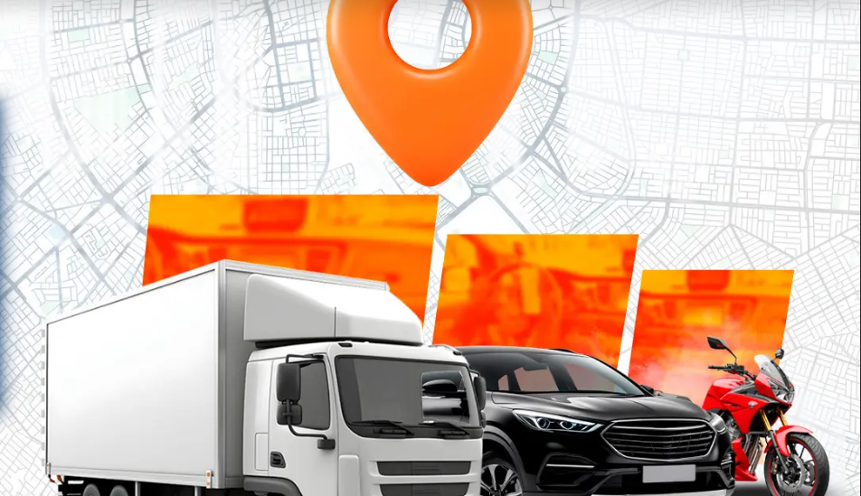

Sobre Nosotros
En Track Seguridad, somos una empresa enfocada en brindar soluciones avanzadas de rastreo de vehículos y objetos, utilizando la última tecnología disponible en el mercado. Nos especializamos en ofrecer productos y servicios que aseguran la seguridad de tus bienes, con un enfoque innovador y personalizado para cada cliente.
Nos enorgullece brindar un servicio confiable, eficiente y a la medida de las necesidades de nuestros clientes, asegurando la tranquilidad en todo momento. Nuestra misión es proteger lo que más te importa, utilizando sistemas de rastreo de última generación.
Misión, Visión, Valores y Objetivos
Misión
Ayudar a las marcas a mejorar su visibilidad mediante estrategias digitales innovadoras que ofrezcan resultados tangibles y medibles. Nos comprometemos a llevar tu marca al futuro digital, alcanzando audiencias segmentadas con campañas personalizadas.
Visión
Ser la agencia líder en marketing digital en Bolivia, innovando constantemente con soluciones adaptadas a las necesidades del cliente, utilizando las últimas tecnologías y creando estrategias exitosas.
Valores
- Innovación: Buscamos siempre las mejores soluciones tecnológicas para nuestros clientes.
- Compromiso: Nos comprometemos a ofrecer el mejor servicio y a cuidar de cada detalle.
- Transparencia: Creemos en relaciones abiertas y honestas con nuestros clientes.
Objetivos
- Expandir nuestra presencia en el mercado local y regional.
- Brindar soluciones integrales de rastreo a nivel empresarial y personal.
- Continuar innovando y mejorando nuestra oferta de productos y servicios.
Servicios
Venta de GPS
Contamos con dispositivos avanzados para la localización de vehículos, personas y objetos.
Rastreo Satelital
Monitoreo 24/7 de tu vehículo o bien más valioso, con acceso en tiempo real a la ubicación.
Monitoreo Personalizado
Servicio personalizado para empresas que necesitan rastrear múltiples vehículos u objetos.
Revisa Nuestro Portafolio
Análisis FODA
Fortalezas
- Dominio de herramientas de automatización digital.
- Capacidad para personalizar estrategias para pymes.
- Buen manejo de redes sociales y pauta segmentada.
Oportunidades
- Crecimiento del comercio electrónico en Bolivia.
- Mayor demanda de marketing digital por parte de emprendedores.
- Avances tecnológicos en herramientas de análisis de datos.
Debilidades
- Limitado reconocimiento de marca.
- Alta rotación de personal.
- Poca experiencia en campañas internacionales.
Amenazas
- Alta competencia de agencias consolidadas.
- Cambios constantes en algoritmos de redes.
- Clientes con bajo presupuesto publicitario.
Análisis de las 5 Fuerzas de Porter
| Fuerza | Valoración | Estrategia |
|---|---|---|
| Alto poder de negociación de los clientes | 1 | Desarrollar una propuesta de valor única que enfatice una especialización clara y un estilo visual que diferencie a Track Seguridad en el mercado. |
| Alto poder de negociación de proveedores | 1 | Crear alianzas con proveedores locales para reducir costos. |
| Alta amenaza de nuevos competidores | 0 | Diferenciación del producto mediante la personalización de servicios. |
| Alta amenaza de productos sustitutos | 0 | Aceptación limitada de productos sustitutos, como servicios de localización GPS alternativos. |
| Alta rivalidad entre competidores | 1 | Posicionar a Track Seguridad con estudios de caso y testimonios de éxito para destacar su liderazgo. |
Estrategias Recomendadas
Estrategia FO (Fortalezas + Oportunidades):
Aprovechar la automatización avanzada para personalizar planes de marketing. Crear alianzas estratégicas con otras empresas tecnológicas para ampliar la oferta.
Estrategia FA (Fortalezas + Amenazas):
Desarrollar una fuerte presencia en redes sociales y diseñar campañas de marketing digital con testimonios de éxito.
Estrategia DO (Debilidades + Oportunidades):
Capacitar al equipo para manejar e-commerce y usar tecnologías avanzadas en redes sociales.
Estrategia DA (Debilidades + Amenazas):
Adaptar automatizaciones rápidamente a los cambios de algoritmo en redes sociales.
CUADRO DE DATOS - MATRIZ BCG